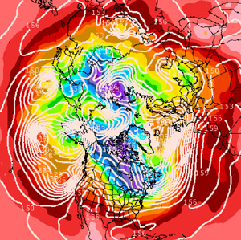

TECHTalkCalifornia casts the big chill IMAGE COURTESY / MIT SYNOPTIC LABORATORY This image from Jan. 10 shows the observed temperature (violet is the coldest) and storm circulation (white lines) in the lower troposphere. At this time of year, the coldest air is normally a solid block close to the North Pole, but last Saturday, the cold pool was split into two pieces by warmer air over Alaska with the coldest air displaced southward. Denise Brehm, News Office The flap of a butterfly’s wings in South America can affect the weather in North America, Professor Emeritus Edward Lorenz of earth, atmospheric and planetary sciences said years ago in describing chaos theory’s application to climate. And January’s frigid New England weather was triggered by the December storms that wreaked havoc in coastal California, says lecturer in meteorology Lodovica Illari, who explains that the warm winds moved up the California coast, over the northern Pacific and Alaska region and into the Arctic Circle, pushing the frosty Arctic air down our way. So while the monarchs are wintering nicely along the California coast, New Englanders are clutching scarves to their faces to block the biting wind. “The Arctic air, which generally sits over the North Pole, was displaced south over our latitude as big storms over the Pacific and western United States transported unusually warm air over the North Pacific and Alaska,” said Illari, whose annual IAP course on weather forecasting meets for the first time today. “This pool of warm air has acted like a wedge and split the Arctic cold air pool into two pieces; one has moved over us and the other moved over Siberia.” And baby, it’s cold outside. A record low temperature of –3 F was recorded Saturday, with record cold expected again tonight. Illari’s IAP course (12.310, Introduction to Weather Forecasting) is always full with 50 students, who earn six units of credit from the Department of Earth, Atmospheric and Planetary Sciences (8.01 and 18.01 are prerequisites). Illari enjoys teaching the skill because it helps students understand the atmospheric concepts they’ve learned. “Weather forecasting is a great teaching tool because students see what they’ve learned put into practice,” said Illari. The course meets from 1:30 to 3 p.m. in Room 54-915 on Jan. 14, 16, 21, 23, 26, 28 and 30. Visitors are welcome if room is available. A feature of the course is a visit by a TV meteorologist in late January. In the five course assignments, students will learn how to read and decode surface observations and geostrophic winds; investigate weather fronts; and make a mock forecast of maximum and minimum temperatures and precipitation. The final assigment will be a forecast contest. |